在本专业课程的后半部分，我们将会讨论如何调试和诊断学习算法可能出错的问题。你还会学习到识别何时可能发生过拟合和欠拟合的具体工具。00:03
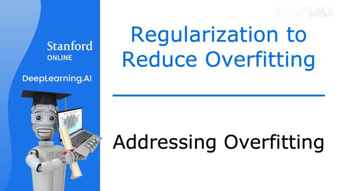
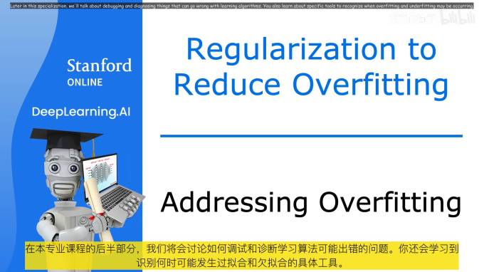
但目前，当你认为过拟合已经发生时，我们先来谈谈你可以采取哪些措施来解决它。00:18
假设你拟合了一个模型，它具有高方差。00:26
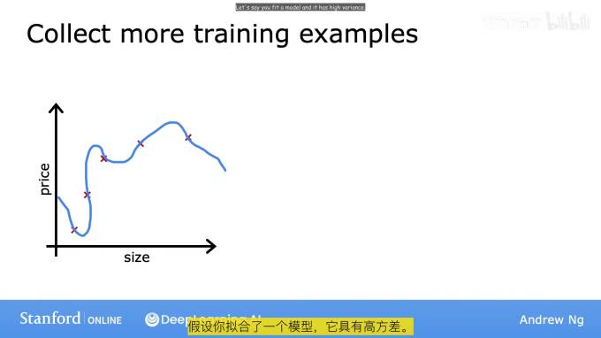
这是我们那个过拟合的房价预测模型。00:31
解决这个问题的一个方法是收集更多的训练数据。00:36
如果你能够获得更多数据，也就是更多关于房屋面积和价格的训练样本，那么有了更大的训练集，学习算法将学会拟合一条波动更小的函数。00:43
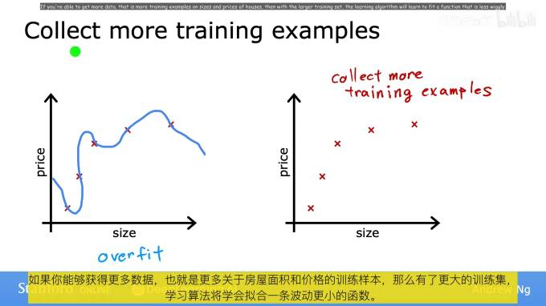
因此，你可以继续拟合一个高阶多项式或其他带有许多特征的函数。00:57
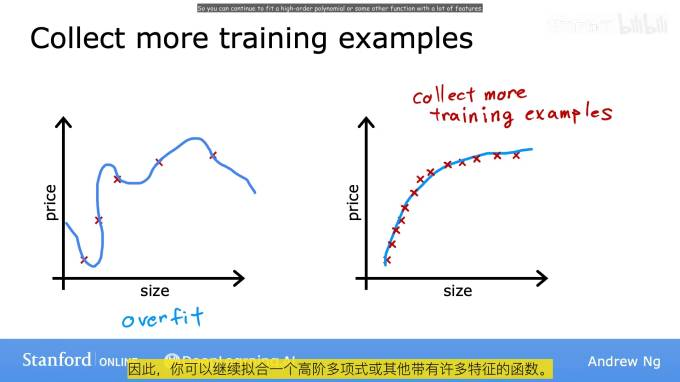
并且如果你有足够的训练样本，它仍然会表现良好。01:04
总而言之，你用来对抗过拟合的头号工具是获取更多的训练数据。01:08
但是，获取更多数据并不总是可行的。01:16
也许在这个地点售出的房屋就只有这么多。01:20
所以可能根本没有更多的数据可用。01:24
但当数据可用时，这个方法非常有效。01:27
解决过拟合的第二个选项是，看看你是否能使用更少的特征。01:31
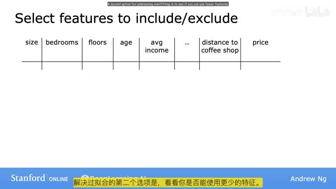
在之前的视频中，我们模型的特征包括面积 x，然后是面积的平方，即 x 的平方，以及 x 的三次方和 x 的四次方，等等。01:38
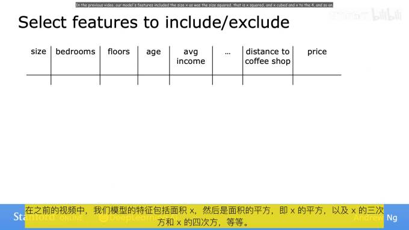
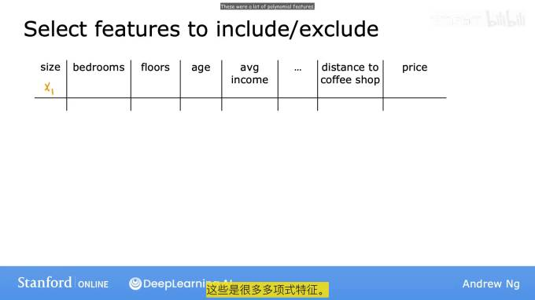
在那种情况下，减少过拟合的一种方法就是不要使用这么多多项式特征。01:54
现在让我们看另一个不同的例子。02:02
也许你有很多关于一栋房子的不同特征，用来尝试预测它的价格，从面积、卧室数量、楼层数、房龄、所在街区的平均收入，一直到距离最近咖啡店的距离，等。02:05
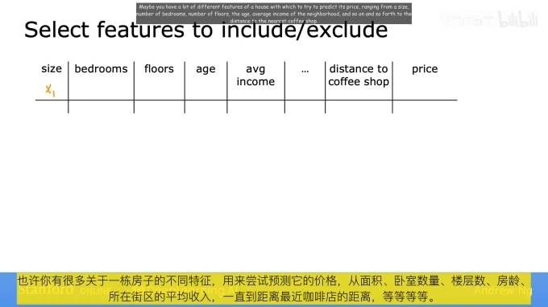
事实证明，如果你有像这样大量的特征，但没有足够的训练数据，那么你的学习算法也可能在训练集上过拟合。02:23
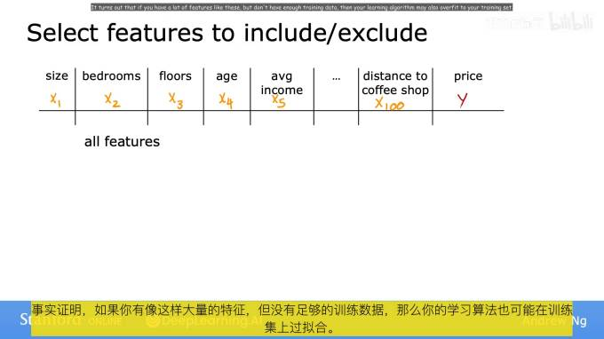
现在，与其使用全部一百个特征，如果我们只挑选最有用的一个子集，也许就是面积、卧室数量以及房屋年龄，如果你认为这些是最相关的特征，那么仅使用这个较小的特征子集，你可能会发现你的模型不再那么严重地过拟合了。02:34
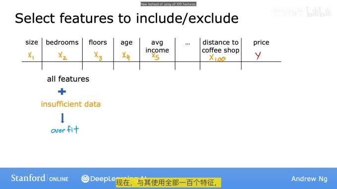
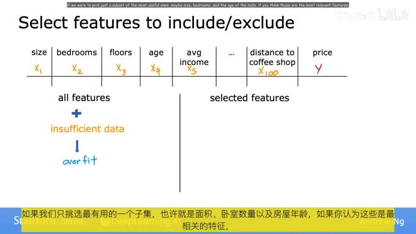
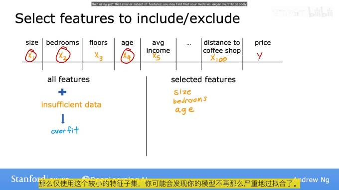
那么仅使用这个较小的特征子集，你可能会发现你的模型不再那么严重地过拟合了。02:49
选择最合适的特征集有时也被称为特征选择。02:56
一种方法是利用你的直觉来选择你认为最佳的特征集，也就是你认为对预测价格最相关的那些。03:03
特征选择的一个缺点是，通过只使用一个特征子集，算法会丢弃你拥有的关于房屋的部分信息。03:14
例如，也许所有这些特征，或者说全部一百个特征，对于预测房价实际上都是有用的。03:26
因此，你可能不想通过丢弃一些特征来扔掉部分信息。03:34
在第二门课程中，你还会看到一些自动为预测任务选择最合适特征集的算法。03:41
现在，这引出了我们减少过拟合的第三个选项。03:50
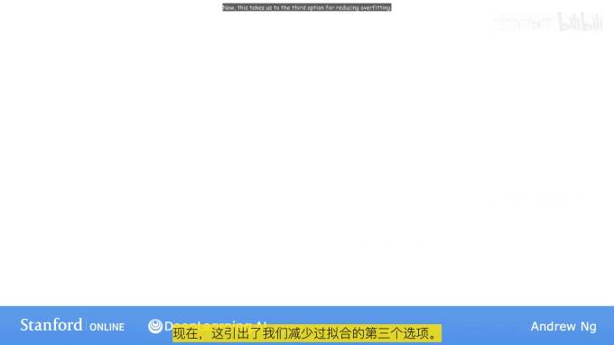
这种技术被称为正则化，我们将在下一个视频中更深入地探讨它。03:54
如果你观察一个过拟合的模型，这是一个使用多项式特征 x，x 的平方，x 的三次方等等的模型，你会发现参数通常相对较大。04:02
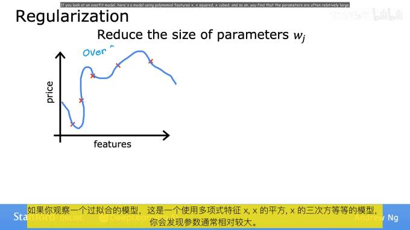
现在，如果你要消除其中的一些特征，比如说你要消除特征 x 的四次方，这相当于将这个参数设置为零。04:15
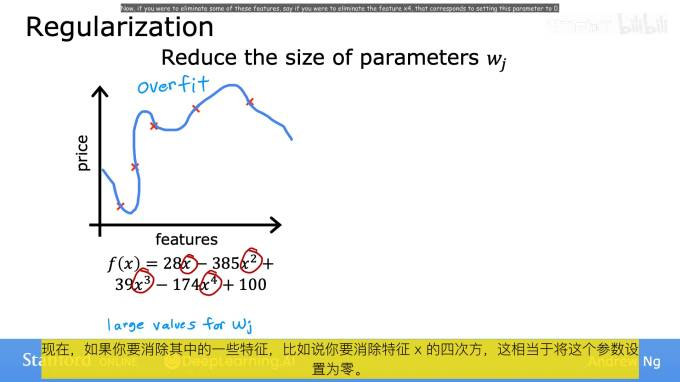
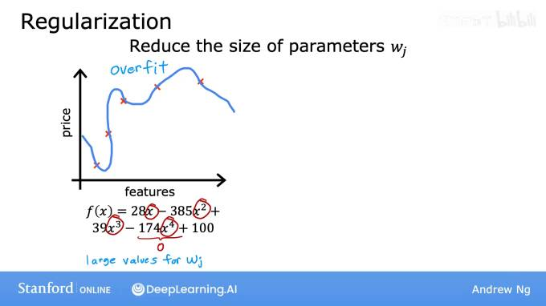
所以，将参数设置为零等同于消除一个特征，这正是我们在上一张幻灯片中看到的。04:28
事实证明，正则化是一种更温和地减少某些特征影响的方式，而不是像直接消除那样武断。04:36
正则化所做的是鼓励学习算法缩小参数的值，而不必要求将参数精确地设为零。04:47
事实表明，即使你拟合一个像这样的高阶多项式，只要你能让算法使用较小的参数值 w 一、w 二、w 三、w 四，你最终会得到一条能更好地拟合训练数据的曲线。04:58
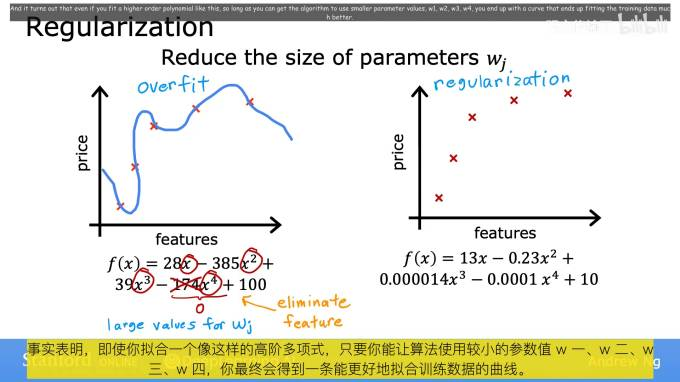
那么，正则化所做的是让你保留所有的特征，但它只是防止这些特征产生过大的影响，而这有时正是导致过拟合的原因。05:17
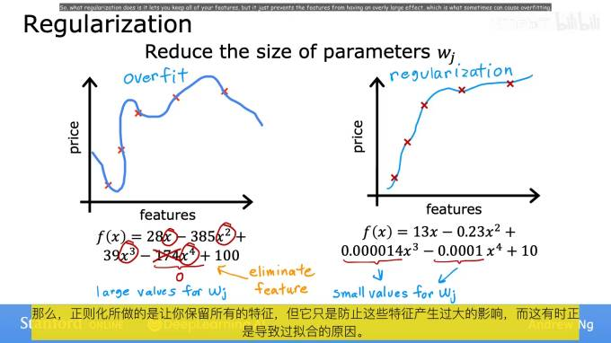
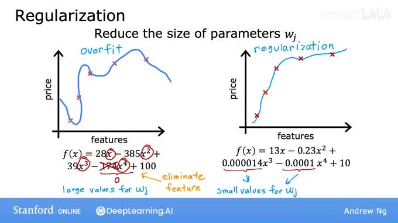
顺便提一下，按照惯例，我们通常只缩小 wj 参数的大小，也就是 w 一到 w n。05:30
是否也对参数 b 进行正则化并没有太大的区别。05:39
你可以根据意愿选择做或不做。05:45
我通常不这样做，只对 w 一、w 二直到 wn 进行正则化就很好，而不是真正鼓励 b 变小。05:49
在实践中，是否也对 b 进行正则化影响非常小。05:58
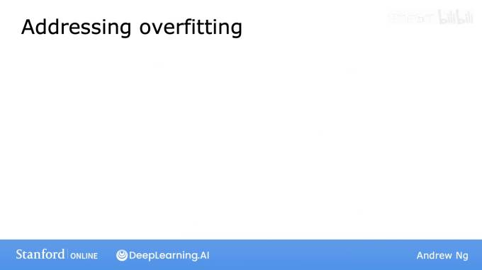
所以，回顾一下，这是你在本视频中看到的解决过拟合的三种方法。06:05
如果你能得到更多数据，这真的能帮助减少过拟合。06:14
有时这不可能，在这种情况下，一些选项是尝试选择并只使用一个特征子集。06:19
你将在第二门课程中学习更多关于特征选择的知识。06:29
三是使用正则化来减小参数的大小。06:34
这也将是下一个视频的主题。06:41
就我个人而言，我经常使用正则化，所以这是一个非常有用的技术，用于训练学习算法，特别是包括神经网络，你将在本专业课程的后续部分看到。06:44
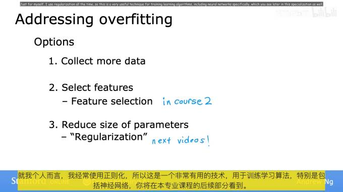
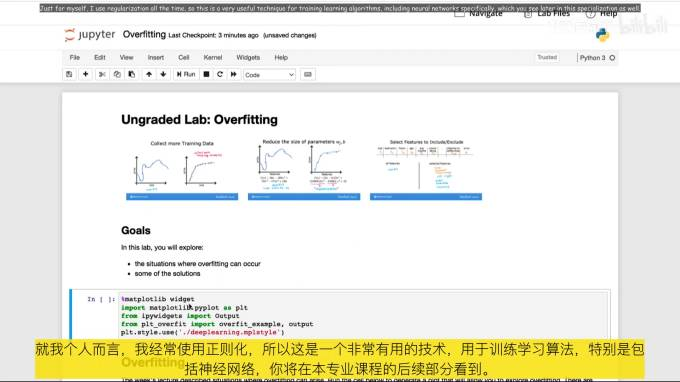
我也希望你能看一下关于过拟合的可选实验。06:58
在实验中，你将看到不同的过拟合例子，并通过点击图中的选项来调整这些例子。07:04
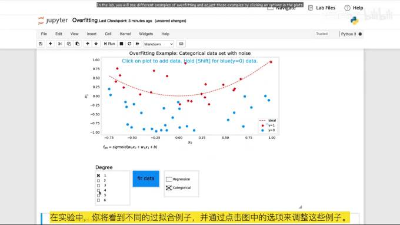
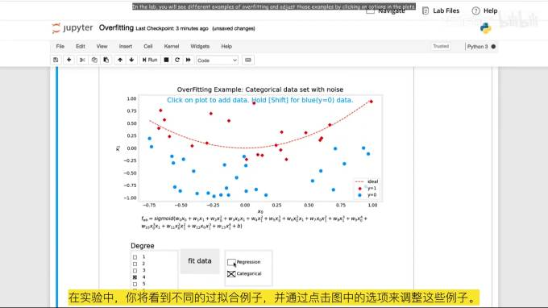
你还可以通过点击图来添加自己的数据点，并观察这如何改变拟合出的曲线。07:13
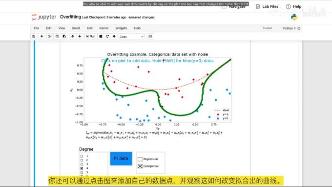
你也可以尝试回归和分类的例子，并且你将改变多项式的次数，从 x、x 的平方、x 的三次方等等。07:21
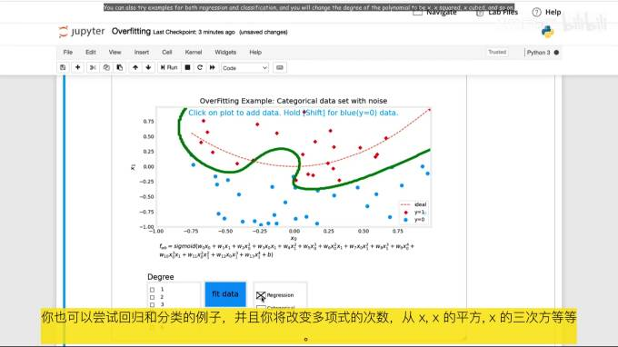
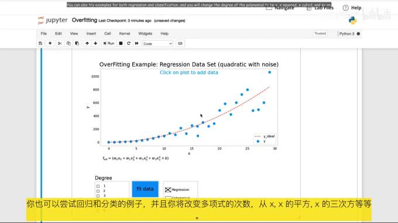
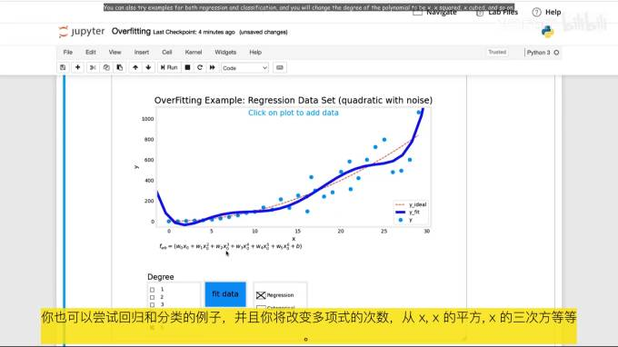
实验还让你尝试两种解决过拟合的不同选项。07:34
你可以添加额外的训练数据来减少过拟合，你也可以选择包含或排除哪些特征，作为尝试减少过拟合的另一种方法。07:39
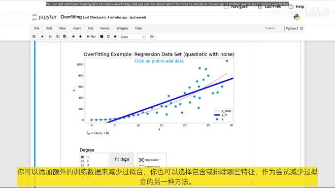
所以请看一下这个实验，我希望它能帮助你建立关于过拟合以及一些解决方法的直观理解。07:51
在本视频中，你还从一个相对宏观的层面了解了正则化的概念。08:00
我意识到，关于正则化的所有这些细节对你来说可能还不是很清楚。08:06
但在下一个视频中，我们将开始阐述究竟如何应用正则化，以及正则化的确切含义。08:13
然后我们将开始弄清楚如何让它与我们的学习算法协同工作，以使线性回归和逻辑回归，以及将来的其他算法，能够避免过拟合。08:22
让我们在下一个视频中看看这些内容。08:35